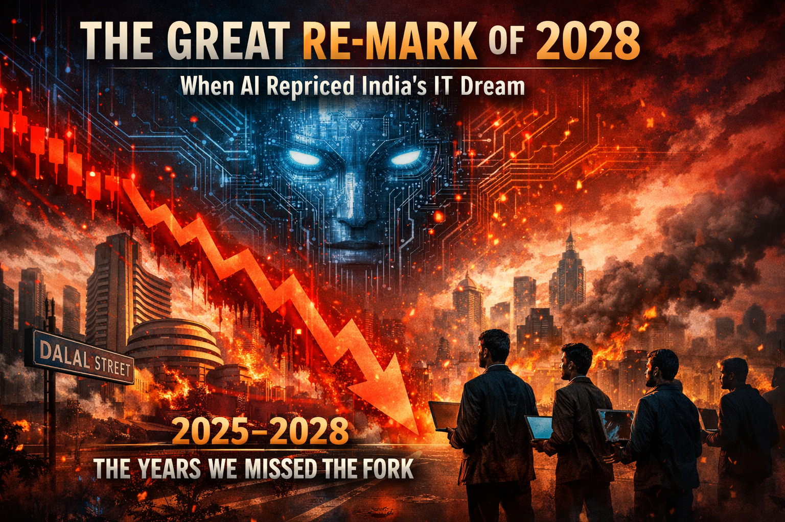

Three forces converged. The world re-sorted. This is what it looked like.
By PaddyMarch 9, 202612 min read

PaddySpeaks · Speculative Infographic · June 2028
The Great Re-Mark
Three forces converged. The world re-sorted. This is what it looked like.
Oil WarAI LeapfrogIndia Squeeze
Thesis 1 · The New Order
Sanctioned nations didn't fall behind in AI. They leapfrogged.
When the West sanctioned chips, it assumed that would stop AI development. It didn't. Iran, Russia, and a constellation of smaller states pivoted to open-source models, smuggled hardware, and sovereign AI platforms built outside every guardrail. No kill switch. No logging. No terms of service. By 2028, the AI gap isn't between "advanced" and "behind" — it's between regulated and unregulated.
▸ Who Gained, Who Lost — The 2028 Power Re-Sort
🇦🇪
UAE / Gulf
AI Infra+340%
Oil Revenue+$180B
↑ GAINED
🇮🇷
Iran
Sovereign AIActive
Economy−40%
⚡ WILDCARD
🇹🇼
Taiwan / Korea
Chip Demand+95%
GDP Growth+8.2%
↑ GAINED
🇮🇳
India
IT Services−$90B
Oil Import Bill+$60B
↓ CRUSHED
🇺🇸
United States
Consumer Econ−18%
AI DominanceStill #1
⚡ SPLIT
🇨🇳
China
Open-Source AIDominant
Strait ImpactManaged
↑ GAINED
The chip embargo was supposed to be a firewall. Instead, it became a forcing function. Sanctioned nations built sovereign AI ecosystems that answer to no one — and the West has no visibility into what they're building.
Thesis 2 · Warfare Got Cheap
The real crisis isn't job loss. It's that AI made geopolitical warfare asymmetric.
In 2024, disrupting a nation's energy infrastructure required a military. By 2027, it required a laptop. Iran's AI-enhanced cyber operations during the Strait of Hormuz crisis proved that open-source models + smuggled GPUs + motivated operators could match capabilities that cost nation-states billions to develop.
Open-source LLMs, smuggled H100s, 12 operators, no kill switch
1000× cheaper. Similar disruption capability against energy infrastructure. The era of containment is over — for AI, just as it ended for nuclear technology. Except AI proliferates faster and costs less.
▸ Iran's AI Capability Growth (Unregulated)
Iran
2024
Iran
2025
Iran
2026
Iran
2027
US
2024
US
2025
US
2027
Iran's offensive AI capability surged 7× in 3 years via open-source + grey-market hardware. US absolute lead remains, but the disruption threshold was crossed.
Thesis 3 · The India Squeeze
India didn't just get disrupted. It got hit from both directions at once.
India's economic model had two pillars: export IT services cheaply, and import oil at manageable prices. AI destroyed the first pillar. The Iran war destroyed the second. The rupee fell 22% in six months. TCS, Infosys, and Wipro saw contracts evaporate as the cost advantage of Indian developers vanished against AI agents that work for the price of electricity. Simultaneously, oil import bills exploded.
▸ The India Squeeze — Crushed from Both Sides
Oil Costs ↑
🇮🇳
India
−22%
RUPEE
IT Revenue ↓
−$90BIT Export Loss
+$60BOil Import Spike
$150BNet Shock
IMFPreliminary Talks
For 30 years, India's value proposition was simple: our developers cost a fraction of yours. But the marginal cost of an AI coding agent is now the price of electricity. The math that built Bangalore's skyline just stopped working.
Thesis 3B · The Cautionary Path
This wasn't inevitable. India had five forks. It missed every one.
Looking back from 2028, the squeeze didn't happen because India was helpless. It happened because the decisions that could have prevented it were individually uncomfortable, politically inconvenient, or just slow. Here are the five forks where India could have turned — and what happened instead.
▸ India's Five Forks — The Decisions That Mattered
1
Fork 1 · 2025
The Body Shop → IP Factory Pivot
✓ IF TAKEN
TCS/Infosys pivot from selling developers by the hour to building AI platforms they own. India becomes the AI services integrator — not the body shop. Revenue shifts from T&M to outcome-based.
✕ WHAT HAPPENED
Firms announced AI pivots but continued billing headcount. 74% of new contracts required AI — but delivery still ran on the old pyramid. The pivot was a press release, not a P&L line.
2
Fork 2 · Early 2026
The Sovereign AI Bet
✓ IF TAKEN
India builds sovereign LLMs in Indian languages — Hindi, Tamil, Telugu, Marathi. Vernacular AI creates a domestic moat no Western lab can match. The IndiaAI Mission budget quadruples.
✕ WHAT HAPPENED
IndiaAI Mission stayed at ₹10,372 crore — a rounding error vs. US/China spend. Vernacular models remained academic projects. India remained a consumer of Western AI, not a builder.
3
Fork 3 · Mid 2026
The Oil Hedge
✓ IF TAKEN
India accelerates strategic petroleum reserves, locks in long-term supply contracts with Russia/UAE at pre-war prices, fast-tracks nuclear and solar. The oil shock is a 12-month problem, not a 3-year crisis.
✕ WHAT HAPPENED
Political gridlock delayed the energy pivot. Subsidy politics made price reform impossible. When Hormuz closed, India was buying 85% of oil at spot prices. The bill was catastrophic.
4
Fork 4 · 2027
The Reskilling Cliff
✓ IF TAKEN
IITs + NASSCOM launch emergency reskilling: 500K engineers retrained as AI architects, not code-writers. India's talent pool becomes the world's largest AI integration workforce.
✕ WHAT HAPPENED
Campus hiring collapsed. 100K+ fresh engineers entered a market with no entry-level roles left. GCCs poached the top 10% at 30% higher salaries. The remaining 90% had nowhere to go.
5
Fork 5 · Late 2027
The NRI Lifeline
✓ IF TAKEN
India creates a "Reverse Brain Drain" program — tax incentives, AI startup grants, fast-track infra for returning NRIs. The diaspora becomes a bridge to Silicon Valley IP, not just a remittance pipeline.
✕ WHAT HAPPENED
NRIs watching the rupee freefall tightened their US positions instead. Remittances fell 15%. The brain drain accelerated — the best talent left for Dubai, Singapore, and GCC AI hubs.
India didn't lack awareness. Infosys announced 4,600 AI projects. TCS set up an AI Centre of Excellence. NASSCOM published roadmaps. The Nifty IT crashed 19% in eight trading days as a warning shot. The knowledge was there. The urgency wasn't.
▸ Two Paths — Same Starting Point
🛡️
Resilience Path
$400B
AI-led IT sector by 2030
Sovereign LLMs · IP ownership · Vernacular moat · Energy independence
Same country. Same talent pool. Same starting conditions. Different decisions.
▸ The Cascade — How It Unfolded
Late 2025
Agentic AI crosses the "good enough" line
CIOs start doing build-vs-buy math for the first time. SaaS renewal rates begin declining.
Feb 2026
Iran strikes begin. Strait of Hormuz closes.
Oil blows past $120. 20% of global supply offline. Shipping freezes. The AI adoption timeline compresses from years to quarters.
Mid 2026
Iran deploys AI-enhanced cyber ops against Gulf infrastructure
Open-source models + smuggled chips. No kill switch, no logging. The asymmetric warfare era begins.
Q3 2026
Indian IT sector hemorrhages contracts
AI agents undercut Indian developer costs. Oil imports spike simultaneously. Rupee begins freefall.
Q1 2027
White-collar layoffs hit critical mass in the US
Initial claims surge past 480K. Displaced professionals flood gig economy, compressing wages for everyone.
Late 2027
Trust collapses. Policy gridlocks.
AI-in-warfare revelations + mass job loss = public revolt against labs and government. Every proposal dies in suspicion.
June 2028
The Re-Mark.
Unemployment 10.2%. S&P −38% from peak. Labor's GDP share at 46%. The world has been re-sorted. Not by ideology — by who adapted fastest.
▸ Where The Dollars Went — Before vs After
❧
You're not reading this in 2028.
The oil war is happening right now. The AI leap already happened. India's IT sector is already feeling pressure. The trust deficit is already building. None of this is science fiction — it's scenario planning using forces already in motion.
The canary is still singing. But it's clearing its throat.